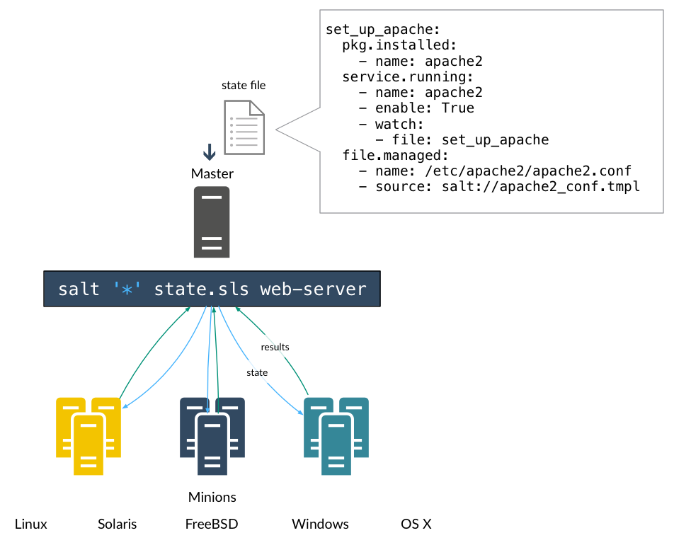

States are the foundation of Salt configuration management. By applying and enforcing states, Salt maintains a known, reproducible environment on all managed systems.
After you have configurations and formulas defined, you can use state.highstate to apply your configurations. During this demo, we've set up the following files on the master:
As a review, here is a brief explanation of the role of each file:
| top.sls | Matches managed systems to formulas. |
| vim.sls | Defines the formula that Salt should execute to achieve the 'vim' state. |
| apache.sls | Defines the formula that Salt should execute to achieve the 'apache' state. |
| index.html | A file managed by Salt. Files and directories can be easily distributed and updated as part of a Salt formula. |
Simple, right?
When we run the state.highstate command:
salt '*' state.highstate
Several things happen.